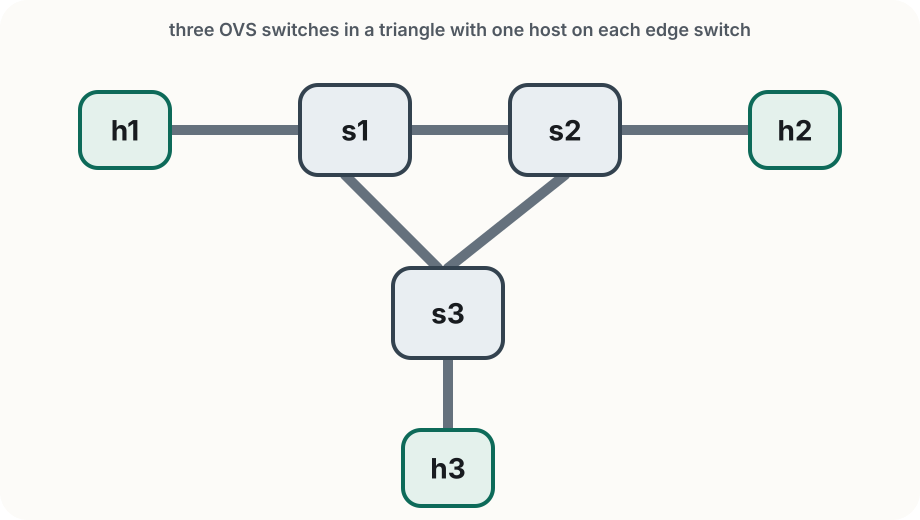

Lab 2
Rogers Executive Workshop 3 — Transport Network
Connecting the programmable network to an SDN controller
In this lab you will:
In Lab 1, you programmed the SDN data plane manually, one switch at a time, using ovs-ofctl commands. In Lab 2, the ONOS SDN controller allows easily programming multiple switches using higher-level abstractions.
The data plane is still realized by flow rules in the switches. What changes is the level of abstraction: instead of programming one device at a time, you work through a controller with a network-wide view.
ONOS (Open Network Operating System) is an open-source SDN controller built for carrier-grade networks.

s1, s2, s3 form a triangle — there are two paths between any pair of switchesIf there were only one path, a link failure would mean no connectivity. The redundant paths are why rerouting works.
First: clean up Lab 1 completely.
Ctrl+D or exit in the Mininet terminal)sudo mn -c in a terminalThen open four fresh terminals and cd ~/labs/lab2 in each:
| Terminal | Purpose |
|---|---|
| 1 | Mininet CLI |
| 2 | ONOS CLI |
| 3 | Jupyter notebook (walkthrough + exercise) |
| 4 | ovs-ofctl and shell verification |
Leftover Mininet state can conflict with new runs. Please remember to run sudo mn -c to clean up after every Mininet run is complete.
Make sure you are in ~/labs/lab2/, then start Mininet (terminal 1):
sudo python3 triangle_topology.py
Once Mininet is running, connect to the ONOS CLI (terminal 2):
ssh -p 8101 -o HostKeyAlgorithms=+ssh-rsa onos@localhost
# password: rocks
You will be dropped into the ONOS shell:
____ _ ______ ____
/ __ \/ |/ / __ \/ __/
/ /_/ / / /_/ /\ \
\____/_/|_/\____/___/
onos@root >
First, check which apps are already active:
onos> apps -a -s
You need three apps running — openflow speaks OpenFlow to the switches, fwd reacts to traffic and installs forwarding rules, proxyarp answers ARP requests on behalf of hosts. If any are missing, activate them:
onos> app activate org.onosproject.openflow
onos> app activate org.onosproject.fwd
onos> app activate org.onosproject.proxyarp
Confirm the switches have connected:
onos> devices
You should see three devices with local-status=connected. If the list is empty, wait a few seconds and retry.
ONOS discovered the switches the moment they connected. Confirm in the ONOS CLI:
onos> devices
onos> links
Now check for hosts:
onos> hosts
The list is either empty or shows hosts with just ipv6 address. ONOS has not yet seen an ipv4 packet from any host yet. Trigger host discovery from Mininet (terminal 1):
mininet> pingall
Check hosts again:
onos> hosts
All three hosts now appear with ipv4 addresses e.g., 10.0.0.1. ONOS learned them by observing the first packet from each one.
From the ONOS CLI (terminal 2), look at what the fwd appliction installed:
onos> flows
id=4200000baf0cae, state=ADDED, bytes=98, packets=1, duration=2,
appId=org.onosproject.fwd,
selector=[IN_PORT:1, ETH_DST:00:00:00:00:00:01, ETH_SRC:00:00:00:00:00:03],
treatment=[OUTPUT:3]
You can also verify these rules directly on the switch — just like in Lab 1 (terminal 4):
sudo ovs-ofctl dump-flows s1 -O OpenFlow13
cookie=0x4200003f9f0001, priority=10,in_port="s1-eth1",
dl_src=00:00:00:00:00:01,dl_dst=00:00:00:00:00:02 actions=output:"s1-eth2"
Both views show the same rules. If either is empty, the rules likely timed out (ONOS uses a default 10s timeout for flow-rules) — run pingall from Mininet and check again immediately.
Interact with ONOS using higher-level APIs and writing our own applications
In terminal 3 (inside ~/labs/lab2/):
jupyter notebook; click on the link that pops uprest_walkthrough.ipynbmininet> or onos>Building a small controller-side application
Open exercises/exercise.ipynb in Jupyter. You will complete a notebook that acts like a small controller application:
The helpers are already provided. Your job is to wire them together in four short parts.
ONOS shows no devices, or the REST API returns an empty device list.
Wait a few seconds after starting triangle_topology.py, then check onos> devices again. If it is still empty, confirm Mininet is running and the openflow app is active.
hosts is empty, or the notebook says a host was not found.
Run pingall in Mininet first. ONOS only learns hosts after it sees traffic from them.
org.onosproject.fwd is active and devices are connected, but pingall still fails.
ONOS may be in a bad state. Run sudo docker restart onos, wait 1–2 minutes, reconnect the ONOS CLI, confirm onos> devices shows all switches as connected, then retry pingall.
Jupyter shows NameError, or the notebook state seems inconsistent.
Run the cells from top to bottom. If you jumped around, restart the kernel and rerun the notebook in order.
I deactivated org.onosproject.fwd, but traffic still works.
Wait a few seconds and check onos> flows again. The old fwd rules may still be present; the exercise should start only after they disappear.
The reroute loop keeps reacting to the same failure over and over.
In Part 4, make sure you save the return value of reroute_once(...) back into path_links. Otherwise the loop keeps watching the old broken path.
In this lab you:
Next, in Lab 3 we still look at programmable forwarding, but change how the path is expressed: instead of OpenFlow rules, we look at programmable forwarding using SRv6, where the route is carried in the packet itself as a segment list.